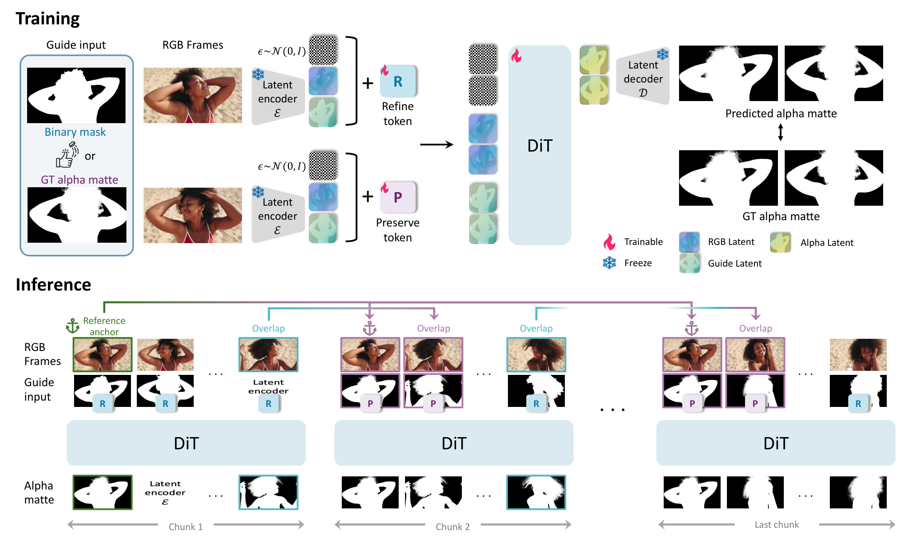
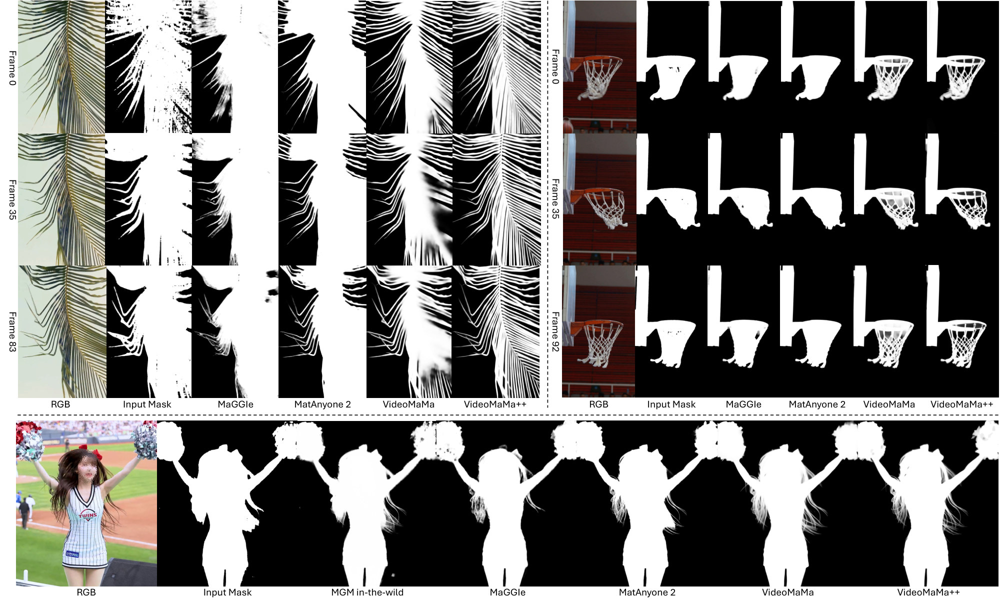
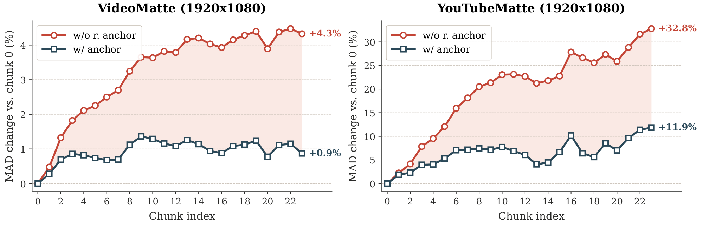
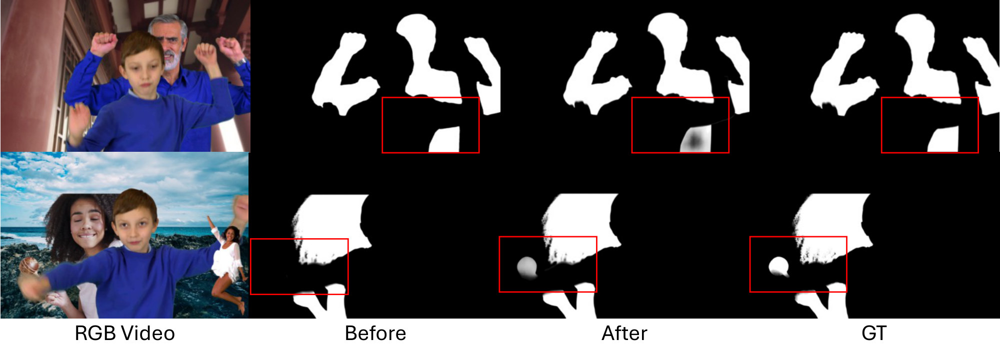

Abstract
Diffusion-based video matting has recently emerged as a leading approach, leveraging video diffusion priors from internet-scale pretraining to achieve strong zero-shot generalization from limited synthetic data. However, the heavy compute of these diffusion backbones limits inference to a short chunk of just 6–24 frames, so even ordinary videos span multiple chunks. Because each chunk is matted independently from coarse mask guidance, existing methods fail to maintain consistency across chunk boundaries, producing flickering edges and discontinuous transparency.
We address this with a mask-guided diffusion-matting framework built on two ideas. The RGB and mask conditioning are represented as separate token streams that interact through full spatio-temporal self-attention, letting the model adaptively combine fine RGB texture with coarse mask layout rather than committing to a fixed channel-wise fusion. On top of this, we propose a novel pair of learnable embeddings, the preserve token and the refine token, that act as a per-frame conditioning interface and enable a sliding-window inference scheme in which already-generated mattes are propagated across chunk boundaries for local temporal consistency, complemented by a globally shared reference anchor at every chunk to prevent error accumulation in long sequences without any additional training. Across standard video matting benchmarks and in-the-wild long footage, our framework outperforms prior diffusion-based methods in both fine-detail accuracy and temporal consistency, and uniquely maintains consistency across chunk boundaries on long videos.
Video
Method

Training (top): RGB frames are paired with either a binary mask or the ground-truth
matte as guide input, encoded into separate token streams by a frozen VAE encoder, and tagged with a
refine (R) or preserve (P) token; the DiT learns both modes jointly within one clip.
Inference (bottom): long videos are processed with a sliding window — overlap frames
carry the previous chunk's matte under the preserve token, and a reference anchor is supplied to
every chunk.
RGB frames and the coarse mask enter the DiT as separate token streams, composed by full spatio-temporal self-attention instead of being fused by channel concatenation.
Two learnable embeddings tag every frame: preserve — keep this matte as a reference; refine — turn this coarse mask into a fine matte consistent with the references.
Sliding-window inference propagates finished mattes across chunk boundaries, and a global reference anchor stops errors accumulating — with no additional training.
Built on Wan 2.1 (1.3B) adapted with LoRA (rank 512) · trained on 3-frame clips at 1024×1024 for about 2.5 days on 8×H100 · one denoising step at inference · RoPE lets the 3-frame training setup generalize to 6-frame chunks at test time.
All methods side by side
9 in-the-wild clips, six methods, all players synchronized to the same timeline. Toggle methods on and off to compare any subset side by side.
Input
Methods
Predicted alpha matte
Greenscreen composite
Click any panel to play/pause · Space play/pause · ←→ change clip · R restart
Quantitative results
Video matting benchmarks at 1920×1080 (VideoMatte, YouTubeMatte) and V-HIM60 (Hard). Every mask-guided method receives the identical SAM3 mask track, so no method gets a privileged mask. Lower is better throughout; underlined is the best baseline.
| Method | VideoMatte | YouTubeMatte | V-HIM60 (Hard) | ||||||||||
|---|---|---|---|---|---|---|---|---|---|---|---|---|---|
| MAD ↓ | MSE ↓ | Grad ↓ | dtSSD ↓ | MAD ↓ | MSE ↓ | Grad ↓ | dtSSD ↓ | MAD ↓ | MSE ↓ | Grad ↓ | dtSSD ↓ | Conn ↓ | |
| SAM3 | 5.05 | 0.94 | 12.02 | 3.11 | 2.35 | 1.11 | 14.63 | 3.28 | 3.91 | 2.09 | 18.37 | 5.08 | 6.97 |
| MGM | 11.28 | 3.23 | 6.33 | 2.11 | 3.59 | 0.53 | 4.27 | 1.57 | 66.31 | 49.02 | 17.53 | 12.73 | 114.70 |
| MGM-IW | 5.01 | 0.35 | 5.01 | 1.38 | 2.41 | 0.38 | 4.25 | 1.37 | 2.89 | 0.84 | 4.86 | 2.74 | 4.08 |
| MaGGIe | 4.26 | 0.27 | 3.61 | 1.23 | 1.67 | 0.50 | 5.11 | 1.46 | 2.72 | 1.03 | 6.05 | 3.18 | 4.72 |
| MaGGIe-FT | 4.44 | 0.33 | 4.53 | 1.35 | 1.52 | 0.37 | 5.36 | 1.47 | 2.81 | 1.03 | 6.53 | 3.12 | 4.84 |
| MatAnyone | 4.17 | 0.27 | 3.59 | 1.17 | 1.74 | 0.53 | 7.37 | 1.56 | 4.04 | 2.29 | 7.04 | 4.08 | 7.10 |
| MatAnyone 2 | 4.04 | 0.24 | 3.13 | 1.13 | 1.52 | 0.44 | 6.46 | 1.48 | 4.73 | 2.93 | 6.69 | 3.70 | 8.06 |
| VideoMaMa | 4.34 | 0.27 | 4.06 | 1.21 | 1.41 | 0.30 | 4.08 | 1.31 | 2.30 | 0.75 | 5.04 | 2.51 | 3.83 |
| VideoMaMa++ (ours) | 3.86 | 0.12 | 1.79 | 0.82 | 1.15 | 0.23 | 3.27 | 1.17 | 1.69 | 0.45 | 2.92 | 1.98 | 2.72 |
VideoMaMa++ is best on every metric of every benchmark. The margins are largest on Grad (boundary sharpness — 1.79 vs 3.13 on VideoMatte) and dtSSD (temporal smoothness — 0.82 vs 1.13), the two metrics that target fine detail and stability over time.
Consistency across chunk boundaries
Three measurements of the failure mode VideoMaMa++ was built to fix.
With 6-frame chunks and a 2-frame overlap, every overlap frame is predicted twice. Marking it with the preserve token cuts the disagreement between the two predictions by 64% in MAD (Gradient: 0.68 → 0.12, −82%). Reference anchor disabled to isolate the token.
YouTubeMatte clips whose chunk-seam frames change more than their interior frames: VideoMaMa 63/64, VideoMaMa++ 18/64. The ground truth, which involves no chunking, scores 32/64 — exactly chance — confirming the test reacts to seams, not content. In the wild: 14/16 vs 7/16.
Growth of MAD by the last chunk relative to the first, on YouTubeMatte, without vs with the reference anchor (VideoMatte: +4.3% → +0.9%). Overlap propagation alone lets errors compound; the anchor keeps the curve flat.

Long videos that no diffusion model can matte in a single chunk. Baselines either miss fine detail or flicker where chunks meet; VideoMaMa++ stays smooth across chunks while still capturing detail that only emerges in later frames.

Reference anchor, ablated
| Setting | MAD ↓ | Grad ↓ | dtSSD ↓ |
|---|---|---|---|
| VideoMatte (1920×1080) | |||
| w/o anchor | 3.95 | 2.24 | 0.86 |
| w/ anchor | 3.86 | 1.79 | 0.82 |
| YouTubeMatte (1920×1080) | |||
| w/o anchor | 1.27 | 4.42 | 1.18 |
| w/ anchor | 1.15 | 3.27 | 1.17 |
The anchor needs no extra training: the preserve token already treats any supplied matte as a reference. Any frame of the first chunk works as the anchor, and even a fully occluded anchor frame leaves V-HIM60 MAD at 1.76 vs 1.71 with a clean one.
Interactive refinement
The same tokens give users control at inference time. Re-tag a bad frame as refine, keep its trusted neighbours as preserve, and re-run: the frame is regenerated from the context of the rest of the chunk — no new mask needed.

| Iteration | MAD ↓ | MSE ↓ | Grad ↓ | dtSSD ↓ |
|---|---|---|---|---|
| 1 (initial) | 1.692 | 0.423 | 2.981 | 1.976 |
| 2 | 1.669 | 0.399 | 2.968 | 1.959 |
| 3 | 1.663 | 0.395 | 2.963 | 1.955 |
V-HIM60 (Hard). Each pass re-refines the worst frame of every chunk; quality improves monotonically.
What matters
Ablations on V-HIM60 (Hard). Lower is better.
Token vs channel concat
| Fusion | MAD | Grad |
|---|---|---|
| Channel | 2.23 | 4.71 |
| Token | 1.69 | 2.98 |
Collapsing RGB, mask and noise into one tensor loses modality-specific information.
Denoising steps
| Steps | MAD | Grad |
|---|---|---|
| 1 | 1.67 | 2.97 |
| 2 | 1.72 | 2.97 |
| 3 | 2.73 | 3.81 |
| 10 | 16.63 | 6.12 |
One step converts the mask into a matte; more steps over-refine it.
Chunk size
| Frames | MAD | dtSSD |
|---|---|---|
| 3 | 2.12 | 2.21 |
| 6 | 1.69 | 1.98 |
| 12 | 1.79 | 2.07 |
Small chunks starve attention of context; large ones dilute the preserve frames.
Mask generator
| Tracker | Input | Ours |
|---|---|---|
| XMem | 5.56 | 3.11 |
| Cutie | 3.70 | 1.94 |
| SAM2 | 4.08 | 1.90 |
| SAM3 | 3.91 | 1.69 |
MAD of the binary input vs our matte: robust to whichever tracker made the mask.
BibTeX
@inproceedings{lim2026videomamapp,
title = {VideoMaMa++: Temporally Consistent Video Matting via Preserve-and-Refine Tokens},
author = {Lim, Sangbeom and Oh, Seoung Wug and Yoon, Heeji and Kim, Seungryong and Lee, Joon-Young},
booktitle = {Advances in Neural Information Processing Systems (NeurIPS)},
year = {2026}
}
VideoMaMa++ builds on VideoMaMa; if you use the mask-guided diffusion-matting setup, please consider citing it as well:
@article{lim2026videomama,
title = {VideoMaMa: Mask-Guided Video Matting via Generative Prior},
author = {Lim, Sangbeom and Oh, Seoung Wug and Huang, Jiahui and Yoon, Heeji and Kim, Seungryong and Lee, Joon-Young},
journal = {arXiv preprint arXiv:2601.14255},
year = {2026}
}